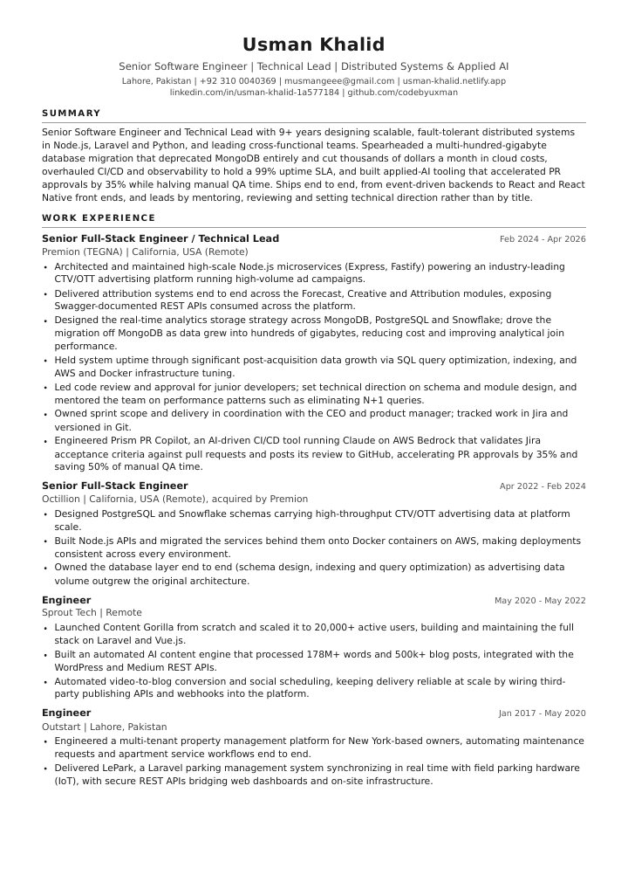

Distributed Systems & Microservices
Node.js (Express, Fastify), NestJS, Laravel and Python/Django services, designed to stay fast and fault-tolerant under heavy, spiky load.
ProofSub-100ms bid responses under ad-exchange SLA
Open to senior & lead engineering roles
I design fault-tolerant distributed systems and ship applied AI that saves teams real time and real money. 9+ years across Node.js, Laravel and Python, building high-scale ad-tech platforms, multi-tenant SaaS, mobile apps and the engineering culture behind them.
Where I've
built & shipped
9+ years. 4 companies. One obsession: systems that don't fall over.
I'm a Senior Software Engineer and Technical Lead who designs scalable, fault-tolerant distributed systems and leads the cross-functional teams that build them. Most recently I led engineering on an industry-leading CTV/OTT advertising platform at Premion (TEGNA), where I drove a multi-hundred-gigabyte database migration that retired MongoDB entirely and cut thousands of dollars a month in cloud costs.
I overhauled CI/CD and observability to hold a 99% uptime SLA, and built applied-AI tooling on the Anthropic Claude API that made PR approvals 35% faster and halved manual QA time. I lead by mentoring, reviewing and setting technical direction, not by title.
What I do
Six things teams bring me in for, each backed by results in production.
Node.js (Express, Fastify), NestJS, Laravel and Python/Django services, designed to stay fast and fault-tolerant under heavy, spiky load.
ProofSub-100ms bid responses under ad-exchange SLA
Schema design, indexing and query optimization, plus multi-store strategy across PostgreSQL, Snowflake, MongoDB and Redis.
ProofRetired MongoDB across hundreds of GB, saving thousands a month
Production AI on the Anthropic Claude API, Gemini and OpenRouter, with guardrails: role-scoped tools, human confirmation and prompt-injection defences.
ProofPrism PR Copilot: 35% faster PR approvals
AWS (EC2, RDS, S3, SSM), Docker, Nginx and GitHub Actions or Bitbucket Pipelines, with keyless OIDC deploys, least-privilege IAM and the observability to keep promises.
Proof99% uptime SLA through post-acquisition growth
Multi-tenant SaaS with Stripe billing, OAuth and plan-based access, plus offline-first iOS and Android apps in React Native and Expo.
ProofSophieFlow (12+ networks) and two shipped Expo apps
Code review and approval, schema and module direction, mentoring, and sprint ownership with the CEO and product manager.
ProofLed engineering on an industry-leading CTV/OTT platform
Career
From IoT parking systems to real-time ad-tech at scale: a track record of owning hard problems end to end.
Premion (TEGNA) · California, USA (Remote)
Octillion · California, USA (Remote) · acquired by Premion
Sprout Tech · Remote
Outstart · Lahore, Pakistan
Impact
Four problems, what I did about them, and the numbers that followed.
Premion (TEGNA)
Challenge
Real-time analytics data had grown into hundreds of gigabytes. MongoDB was getting expensive and slow for the analytical joins the product depended on, while traffic kept climbing after the acquisition.
What I did
Designed a new storage strategy across PostgreSQL and Snowflake, then led the migration off MongoDB alongside SQL optimization, indexing and AWS/Docker infrastructure tuning.
Premion (TEGNA) · Applied AI
Challenge
Pull requests waited on manual checks against Jira acceptance criteria, slowing approvals and tying up QA.
What I did
Built an AI-driven CI/CD tool running Claude on AWS Bedrock that reads each PR, validates it against its Jira acceptance criteria and posts the review back to GitHub.
Sprout Tech
Challenge
Launch a brand-new content product from scratch and keep it reliable as usage grew.
What I did
Built the full stack on Laravel and Vue.js, an automated AI content engine, WordPress and Medium integrations, and video-to-blog plus social scheduling automation.
Client project · Python
Challenge
CRM stage changes from GoHighLevel had to reach Trello reliably, even when webhooks arrived twice or the Trello API was down, without anyone babysitting it.
What I did
Built a Django + DRF service that stores each event idempotently in PostgreSQL and syncs it through Celery with exponential backoff, then shipped it to EC2 with gated, OIDC-based CI/CD and defence-in-depth security.
Selected work
Platforms I've architected, led or built solo: sub-100ms bidding engines, Python event pipelines, AI-native SaaS and offline-first mobile apps.
Real-time bidding platform (demand-side)
Event-driven CRM → Trello sync in Django
AI-driven CI/CD quality gate
Ad-tech reporting & campaign management
Construction management platform for AU/NZ
Native field app for construction sites
AI job-application platform
Apply to jobs in two taps, from anywhere
AI social media management SaaS
Self-running SEO blog and prompt library
First-generation SophieFlow platform
Most of this work lives in private client and product repositories. Happy to walk through the code on a call.
github.com/codebyuxmanToolkit
The stack I reach for when it has to be fast, correct and still running at 3 a.m.
Approach
I own code review and approval, and use it to teach: performance patterns like eliminating N+1 queries, sound schema design and clean module boundaries.
I make architecture calls with data: storage strategy, migrations, API standards. I document them in RFCs and Swagger so squads can move fast without guessing.
I plan sprint scope directly with the CEO and product, track it in Jira and ship it predictably. Cost, uptime and speed are engineering metrics too.
Foundation
A computer science foundation, then nearly a decade applying it across industries.
University of Lahore · Lahore, Pakistan
Industries I've shipped in

Resume
Everything on this site in an ATS-friendly resume, ready to forward to your hiring team.
Contact
Hiring for a senior or lead role, or need a hand with a distributed system or an applied-AI product? I'd love to hear about it.